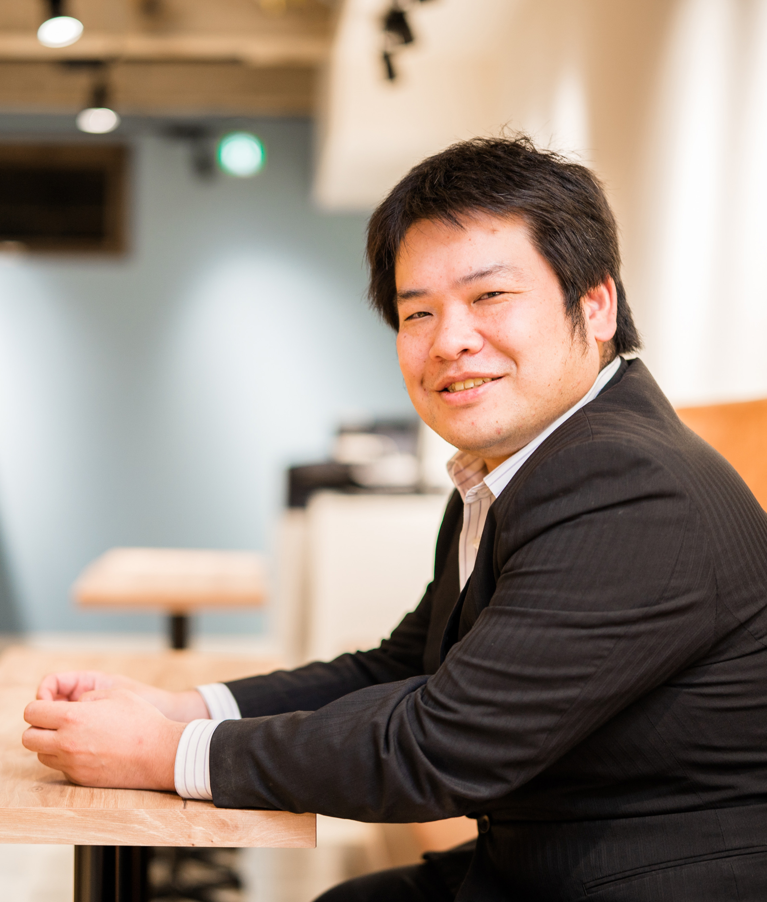
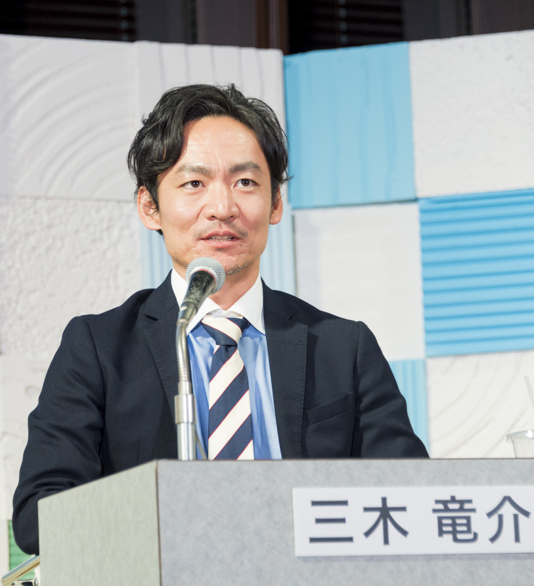

| Last up date 2019/12/31
講演者の情報を更新しました(2019/12/31)
講演者の一部公開しました(2019/12/27)
今年のテーマを公開しました(2019/12/10)
ホームページを公開しました(2019/09/15)
|
| |
第26回社会情報システム学シンポジウム
|
|
|
一般セッション講演および参加者募集
|
|
概要
|
|
社会情報システム学研究会では，2020年1月31日（金）に，第26回社会情報システム学シンポジウムを社会情報学会との共催，計算社会科学研究会の後援，エムスリー株式会社m3.com編集部の協力にて開催いたします．
本シンポジウムでは，基調シンポジウムを行いますとともに，社会情報システム学に関する最先端の研究発表を公募し，全採用論文からなる学術講演論文集（ISSN：1882-9473）を発行いたします．今年のテーマは，「PHR／PLRの活用に向けた取り組みと課題」です．
基調シンポジウムでは，3名の方に登壇いただく予定です．まず，厚生労働省健康局健康課の藤岡雅美氏より，PHRを巡る政策についてご講演いただきます．次に，渥美坂井法律事務所・外国法共同事業パートナーの落合孝文氏より，PHRに関する法律，制度的視点について弁護士の立場からご講演いただきます．さらに，DataSign代表取締役社長／MyDataJapan常務理事の太田祐一氏よりオンラインデータ活用の現状と課題についてご講演いただきます．
|
|
 |
|
|
藤岡雅美氏
（厚生労働省健康局健康課） |
|
落合孝文氏
（渥美坂井法律事務所・
外国法共同事業パートナー) |
|
太田祐一氏
（DataSign代表取締役社長
MyDataJapan常務理事） |
オーガナイズドセッションでは，「PHR／PLRの取り組み〜事例編」と題し，具体的な事例についてご報告いただく予定です．
まず，奈良先端科学技術大学院大学の諏訪よりPLRの研究動向について報告いたします．その後は，神戸市の三木竜介氏からは神戸市におけるPHRの取り組みである「MY CONDITION KOBE」について，メディカルデーターカード株式会社 代表取締役社長の西村邦裕氏からはPHRアプリ「MeDaCa」を用いた患者中心医療についてご報告いただきます．さらに，もう1名，医用画像をつなぐPHR活用についてご講演いただく予定です．
|
|
|
|
 |
|
|
諏訪博彦氏
（奈良先端科学技術大学院大学） |
|
＊＊＊＊＊（＊＊＊＊＊＊＊＊） |
|
三木竜介氏
（神戸市） |
|
西村邦裕氏
（メディカルデーターカード株式会社 代表取締役社長) |
ご関心をお持ちの多数の方々のご参加をお願い申し上げます．
|
|
|
|
|
|
| プログラム |
| 09:30～12:00 |
一般セッション講演 １ |
一般セッション講演 ２ |
| 12:00～13:15 |
休憩 |
| 13:15～14:45 |
オーガナイズドセッション
PHR／PLRの取り組み〜事例編
・PLRに関する研究動向（仮）：20分
諏訪博彦氏（奈良先端科学技術大）
・医用画像をつなぐPHR活用（仮）：20分
＊＊＊＊＊＊＊＊（現在依頼中）
・神戸市PHR「MY CONDITION KOBE」（仮）：20分
三木竜介氏（神戸市）
・PHRアプリ「MeDaCa」を用いた患者と医療機関との架け橋：20分
西村邦裕氏（メディカルデーターカード株式会社 代表取締役社長）
|
| 14:45～15:00 |
休憩 |
| 15:00～17:00 |
シンポジウム
PHR／PLRの活用に向けた課題と今後（司会：長倉克枝）
・講演①：PHRを巡る政策：20分
藤岡雅美氏（厚生労働省健康局健康課）
・講演②：PHRに関する法律、制度的視点：20分
落合孝文氏（渥美坂井法律事務所・外国法共同事業パートナー、弁護士）
・講演③：オンラインデータ活用の現状と課題 ～MyData・情報銀行～：20分
太田祐一（DataSign代表取締役社長／MyDataJapan常務理事)
・パネルディスカッション：60分
上記の登壇者＋ディスカッサント（藤田卓仙氏、江間有沙氏）
|
| 17:30～19:30 |
懇親会 |
|
＜参加費等＞
|
-
参加費：登壇者3,000円，聴講者（一般：1000円，学生無料）
-
懇親会費：4,000円（一律）
|
|
|
|
＜一般セッション講演論文応募規定概要＞
|
-
Web上の画面にて，300字程度の要約および必要事項を記入の上，2019年12月
6日13日（必着）までにお申し込み下さい．
-
プログラム委員会にて申込内容に基づき審査を行い，採否を決定いたします．
-
採用の方は，2020年1月10日（金）必着にて，カメラレディ原稿をお送り下さい．
-
カメラレディ原稿は，A4版6枚以内で，図表を含みます．
-
予稿集は，電子データとして配布いたします．冊子が必要な方は，別途有料にて承ります．
|
|
|
＜過去の開催情報＞
第25回社会情報学システム学シンポジウム
第24回社会情報学システム学シンポジウム
第23回社会情報学システム学シンポジウム
第22回社会情報学システム学シンポジウム
第21回社会情報学システム学シンポジウム
第20回社会情報学システム学シンポジウム
第19回社会情報学システム学シンポジウム
第18回社会情報学システム学シンポジウム
|
＜お問い合わせ先＞
社会情報システム学研究会事務局 研究会幹事 諏訪博彦 e-mail：iss-office<at>ni.is.uec.ac.jp
|
|